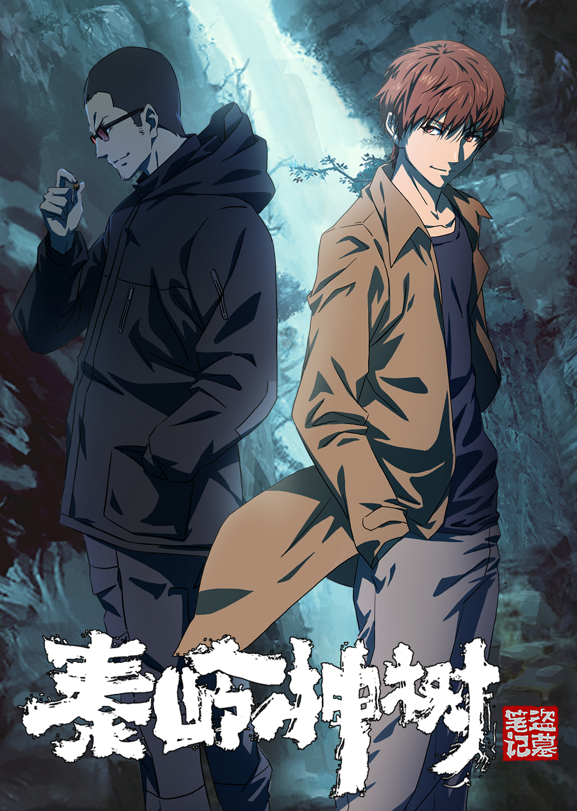

Subs Overlay for Guodong Subs
This project is maintained by wuzimiko
Hosted on GitHub Pages — Theme by orderedlist
Synopsis

Upon returning to Hangzhou from his two adventures in Nansha, Wu Xie received a call from an estranged childhood friend Lao Yang. Intending to invite Wu Xie to the ancient relics, Lao Yang described of his experiences in the backlands of Qinling Mountains three years ago. During the expedition, Wu Xie and Lao Yang came across a massive Hucho Taimen (Siberian giant trout), a grand underground waterfall, and a mysterious ancient tree that has lived for several million years. Not just that, but the ever elusive Zhang Qiling might just be helping Wu Xie in secret.
Source: 腾讯视频 - 动漫 (Youtube), edited
Episodes
01
/ 02
/ 03
/ 04
/ 05
/ 06
/ 07
/ 08
/ 09